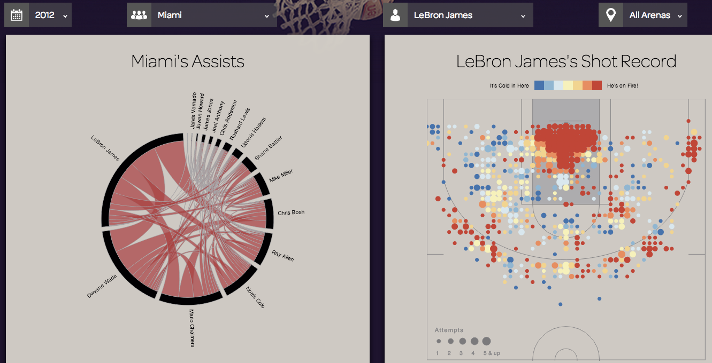
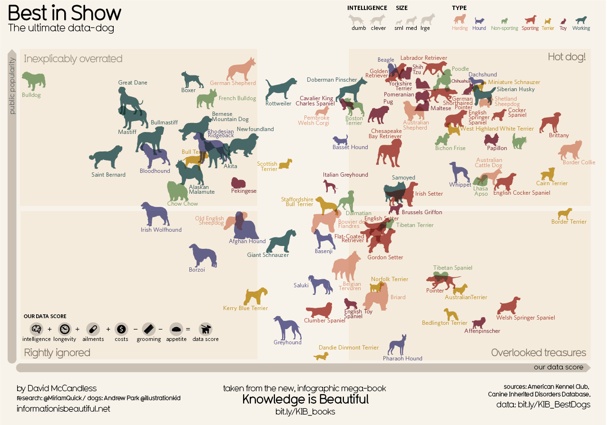
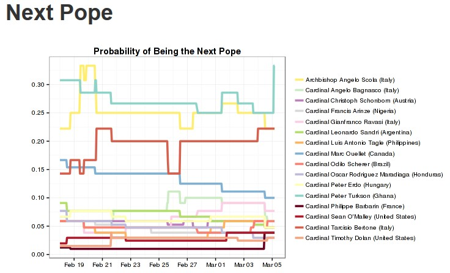

可视化分析是数据可视化产生价值的最后一部，这个过程通常需要人的参与，所以其分析结果必然会带有一定主观性。
3.3.1 篮球热力图

3-8
NBA赛场上，教练们往往需要通过如上述般的热力图，来分析产生各个球员的得分和其位置数据，进而帮助其制定战略。上图是小皇帝詹姆斯在球场的各个位置命中的情况。该图表由Accenture的数据团队的Hot Shot Chart提供的技术支持。
Hot Shot Chart的地址是：http://hotshotcharts.com/
3.3.2 冠军宠物狗

3-9
上图横轴是宠物狗的得分，此得分等于智慧＋寿命＋疾病＋价格－美容－食欲，纵轴是该宠物狗受公众欢迎的程度。有趣的一点是，图中狗头所朝向的方向，代表该宠物狗是否机灵，狗头向左表示呆滞，反应慢，向右则表示聪明，反应快。
3.3.3 谁是下届教皇？

3-10
赌徒们真是拥有发散性思维，一切结果不确定的事件，都可以当作赌博的话题，就连选教皇这么严肃的事也不能幸免。网友AJ根据某个赌博网的数据，制作了一个相关的可视化作品，跟踪各个候选人的当选概率。可视化允许用户选择排名第1到第15的候选人，然后绘制出他们各自概率随时间变化的曲线。从图上看出Archbishop Angelo Scola和Cardinal Angelo Bagnasco竞争激烈，两条曲线高于其他曲线，并且交织在一块。而从最近的趋势来看，Bagnasco上升明显，Cardinal Christoph Schonbom后来居上。虽然目前还没法预测鹿死谁手，但是整个可视化还是清楚的显示了哪些人优势明显。[10]